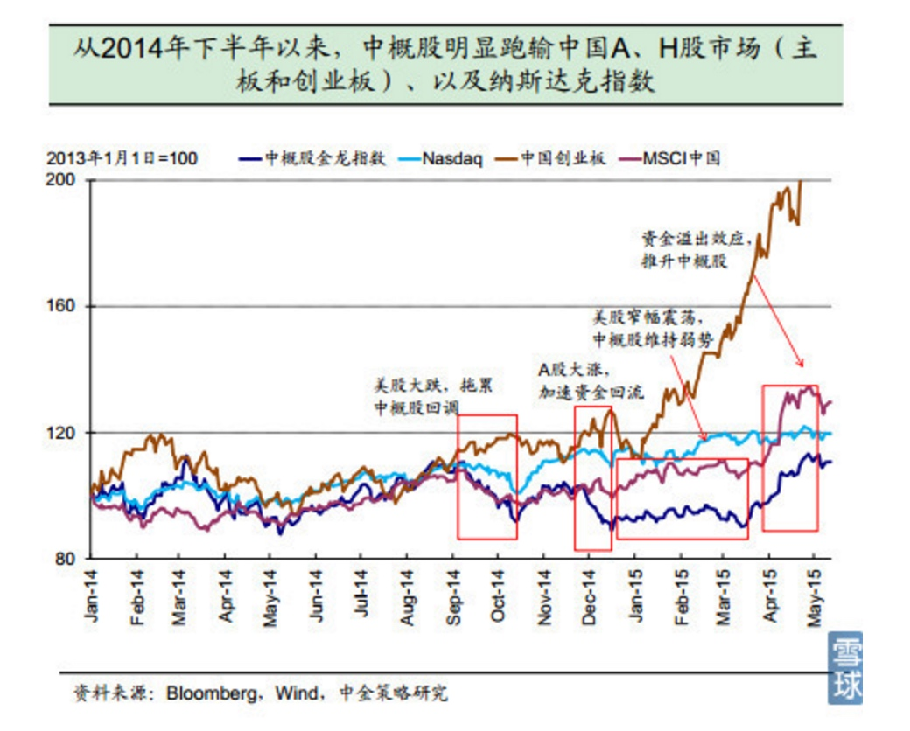
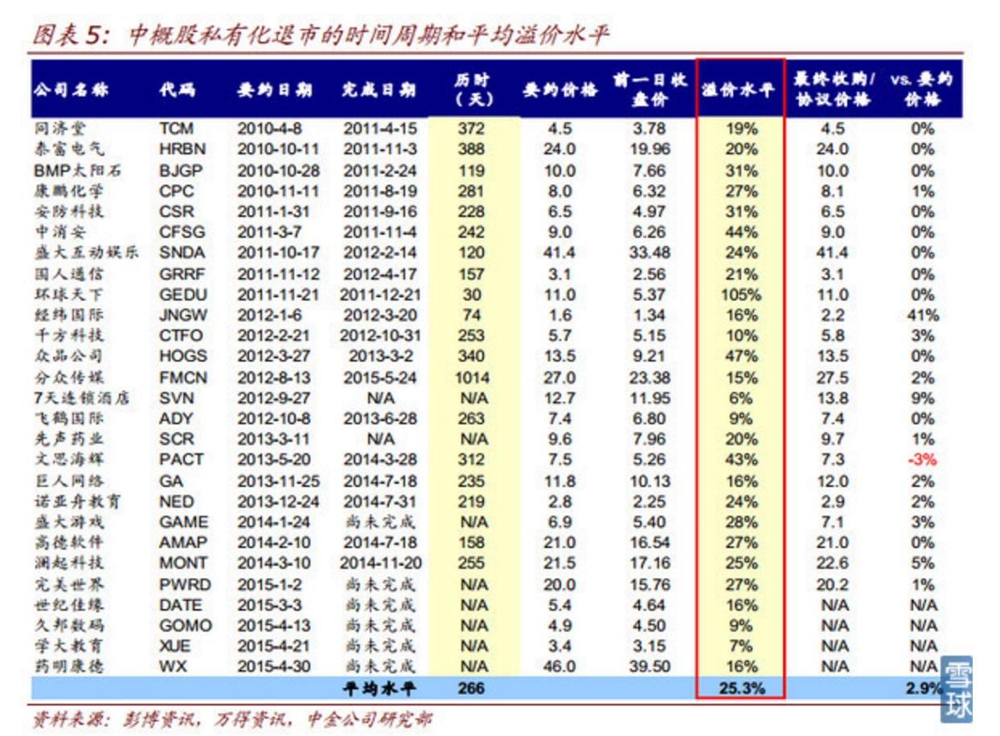
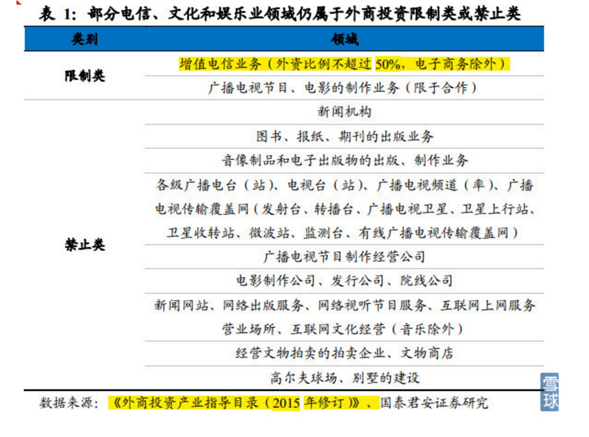
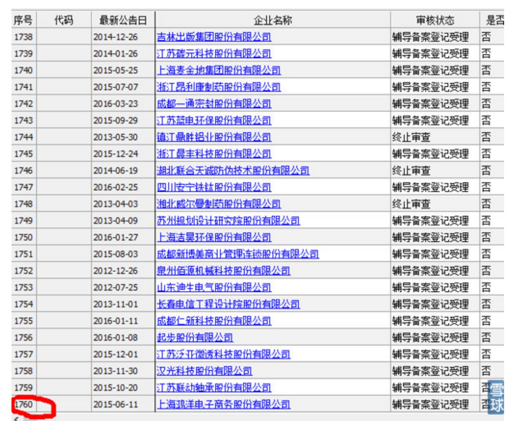
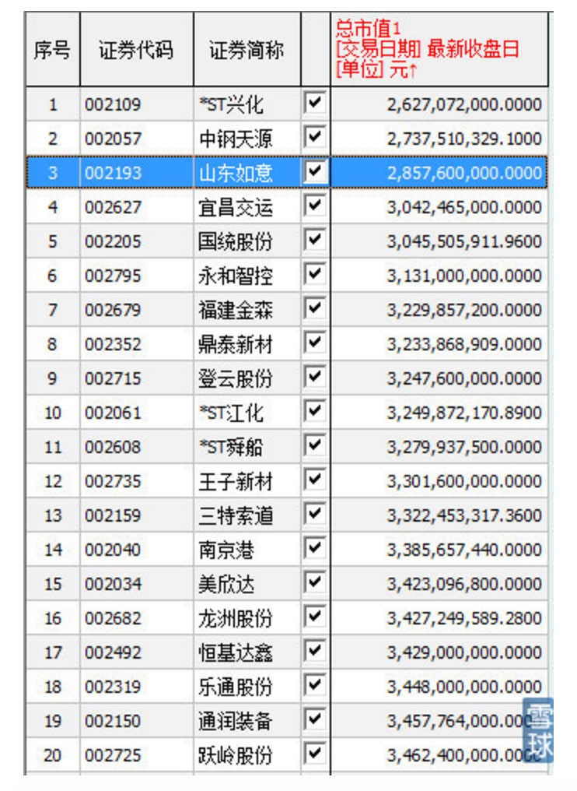
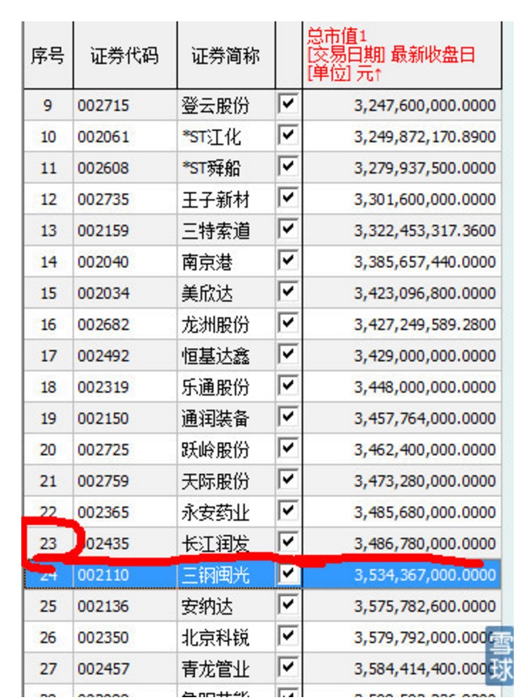

摘要: 虽说借壳的要求越来越与IPO的要求一致，但借壳上市的核准是由发审委下设的专门的并购重组委员会进行核准，而且不会受到“暂停审核IPO”的影响。所以一般都要比IPO快点。
在经历了2013年的大幅上涨之后，中国概念股市场从 2014 年下半年以来便因为大环境以及自身的问题开始一蹶不振，大幅落后于中美两地市场，俨然成为“被遗忘的角落”。加上A股市场的巨大吸引力：高估值体系、充裕的流动性、知名度、品牌效应、以及再融资功能，私有化回归则成为中概股公司常态。
中概股回归的投资机会属于“跨市场套利”，利用国外和国内两个市场的较大的估值差套利。最近，360、博纳、汽车之家……“中概股回归”项目满天飞，引起投资者密切关注。
投资中概股回归项目真的如一些投资机构说的那样“几年翻几番”，“稳赚不赔，没有风险”吗？中概股回归有哪些要点？风险在哪里？
由分享投资“享投就投”CEO；中国注册会计师蔡聪及分享投资“享投就投”投资经理曹衍真详细解读：中国概念股回归，都要经历哪些坎？
中概股为什么要回归？
外部原因是中概股受美国的市场整体环境的影响更大。因此，2014年9月下旬美股市场剧烈波动直接导致了中概股的大幅回调。
A股2015年上半年，A股市场开启牛市，分流资金；

自身原因则是中概股负面事件和自身问题不断：
做空机构发起了多次针对中概股公司的做空；
在2014年第四季度业绩期中， 行业龙头企业阿里巴巴、百度、优酷土豆，以及去年新上市的微博、陌陌等多家中概股公司业绩表现不佳；
集体诉讼接连爆发。中概股企业在信息披露和公司治理方面的“水土不服” 引发诉讼。主要是发布虚假或者误导性的信息；
外部和自身的原因都导致“中概股”在美国被“冷落”，无论绝对估值还是相对估值都被明显的低估。而与A股创业板公司的高估值，充裕的流动性、知名度、品牌效应、以及再融资功能形成非常强烈的反差。
但我个人认为，导致估值差距巨大的最本质的原因是中美投资者的构成和投资理念的不一样。美国以机构投资者为主，而中国以散户为主。当然也与美国比较成熟的做空机制有关。
因此在此背景下美国中概股公司私有化退市已逐渐成为常态。
未来一年，中概股回归会有许多的成功案例，例如巨人网络、完美世界。而未上市的境外公司拆VIE架构，然后在A股上市的成功案例则有不少。如暴风科技（做网络视频）、二六三（网络通信）和启明星辰（网络安全）。上市后都有非常好的估值。其中暴风开盘连续30个涨停板更让美国这些比他们优秀得多的公司非常眼红。
中概股回归，政策环境如何？
这几天也有传闻称，证监会拟暂缓中概股企业国内上市，中概股回归国内借壳、重组、IPO可能受限制。当然，后来传闻也被逐步被澄清是与事实不符的。然后，政策的风险是肯定存在的，IPO都可能被暂停，何况借壳上市？
但是，我们预测中概股回归会逐渐宽松，而不是越来越收紧。行业准入限制的放宽、以及对新兴产业公司上市融资的鼓励，有望使得公司不需要完全清理现有的外资股东便可以满足国内上市条件。
管理层整体是鼓励中概股回归，而不是打压限制中概股的回归的。前几天的传闻所谓的“限制中概股回归国内借壳”是与大方向背道而驰的。
实际上，中概股回归兴起以来，监管层对中概股回归都是持鼓励的态度，也出台的一些具体的政策，给中概股保驾护航。例如：
2015年6月4日国务院常务会议提出的“推动特殊股权结构类创业企业在境内上市”有望突破目前约束普遍采用VIE 结构的中概股公司回归A 股的制度和政策上的约束；
2015年5月4日国务院发布《关于大力发展电子商务加快培育经济新动力的意见》，提出要加大金融服务支持，研究鼓励符合条件的互联网企业在境内上市，并且放开外商投资电子商务业务的外放持股比例。外商准入门槛的放开将降低企业拆除VIE 结构的难度，有望使得公司不需要完全清理现有的外资股东便可以满足国内上市条件；
这些政策都体现了一个主要思想：鼓励中概股回归。
中概股回归，要走完怎样的过程？
关键步骤：
1，在美退市。
2，拆除VIE结构。
3，A股申请上市。
关键步骤1：在美国退市
在美股市场上进行私有化的常见方式是通过“并购”来实现。根据美国和开曼群岛公司法的规定，当大股东持有上市公司超过90%以上的流通股时，可以直接进行私有化，而不需要得到被收购公司股东大会或者董事会的批准，即所谓的短式并购。
因为大部分上市公司股权不会这么集中，因此，“并购”有两种方式：两步并购；一步并购。
一步并购：简单来讲就是召开股东大会，投票表决。根据中概股公司普遍注册地开曼群岛公司法第86 条规定，需要被收购股份的股东人数超过50%、并且持股价值75%以上的股东批准同意，有化方案才能通过。比较麻烦，证监会要审批，流程较慢。
两步并购：（近期的实践，大部分采用这种方法：先向董事会提出邀约收购，跟主要股东谈价格，如果谈妥了，获得90%的股权，再直接用短式并购私有化。如果不能完成90%的股权的收购就用“一步收购”。）完成了90%的股权收购，直接向SEC注销注册。
这整个过程一般是3-6个月的时间不等，因为每一家中概股的公司情况不一样。我们不难看出，这一步骤需要多久，有几个关键因素：
1，该中概股的股权集中程度？越集中越好谈。满足几个大股东的胃口就可以了。
2，董事会是否配合私有化？
3，SEC的审查速度怎么样？退市需要SEC审查。
4，收购价格对小股东来说，是否满意？越高肯定越快。价格低了，小股东诉讼市值小的公司比市值大的公司容易。百度，阿里，京东私有化有没有可能，有，但是得花多少钱啊！

这里有一个中金公司研究部整理的一些案例，截至2015年6月，可能不是很updated。我们可以看出时间私有化退市最快居然有30天就完成，例如环球天下，当然溢价水平也很高啊！而最长可以长达一年，例如泰富电气。
当我们收到中概股回归的投资机会时，基本上私有化都是确定的。因此，私有化失败的风险很低，不是投资中概股回归的主要风险。
关键步骤2：拆除VIE结构
中概股，绝大部分是VIE架构。要回归都要面对一个棘手问题：“拆VIE”架构。
快速简单介绍一下，VIE，全程（Viriableinterest entities）,可以理解为“协议控制”，即，境外“母公司”并不通过直接持有境内“子公司”的股权成为控股股东的方式达到控制目的，而是通过与“子公司”签订一系列的关于资产、经营决策权等方面的协议，对其实施实质上的控制。目前境内实际经营的公司通过服务费等形式将经济利益输送到境外实施控制的实体。
为什么会有VIE？
1，企业的融资需求：国外的风险投资行业比中国起步早，很多是互联网领域的早期投资者。中国风险投资行业发展初期，投资早期项目的机构还不是很多，拿国外投资者的钱就相对好拿。而且，由于国内对企业IPO有严格的盈利要求，因此海外上市成为这些投资者的主要的退出途径。因此，国外的钱好拿，国外上市也好上，就顺理成章要海外投资者的钱。
2，拿了外国人的钱，虽然解决了前期的融资问题，但也引来另外一个问题，这也是要做VIE架构的另外一个主要的原因：我国对外商投资企业涉及互联网内容提供商等领域有着较为严格的限制。那就是有外资股东，你就不能在中国做互联网生意。那怎么办？

所以就出现：协议控制，VIE结构。股权结构上都是内资，但是实际上这些国内股东都是“傀儡”，拿去申请经营许可时，就把这些人搬出来。一看都是中国人，中国公司，没问题。但是，公司实际上被海外投资者的一系列的协议控制着。
这是一个典型的VIE架构：
VIE结构对中国一些新兴产业的发展做出了巨大的贡献。弥补了中国上市规则以净利润论英雄的模式的缺陷，让不少互联网巨头都发展起来而且在海外成功上市。中国管理层也对这种做法“默许”（虽然没有说的你合法，但也至少没有说你违法，或者打压。）
了解了为什么存在VIE，那么就知道为什么需要拆除VIE了。原来你是一个“香蕉仔”（即，“外表是黄总人，内心是白种人”），要变成一个堂堂正正的中国人，而且还想上市，那当然得接受改造。也就是，拆VIE架构。
拆除VIE架构不是说拆就拆这么容易。拆除过程包含对海外机构投资者股份的赎回、 VIE 相关协议的解除、股权结构的调整、境外主体的注销等操作，而且为了“满足持续经营三年”以上的上市要求，要保证了实际控制人未发生变化、董事会构成及高级管理人员未发生重大变化以及实际生产经营没有受到实质影响。
拆VIE过程中，还涉及商务、工商、外汇、税收等多个监管程序。跟这些部门打交道，想一想都烦，我也不想研究这些细节。总之记住一点就行，很麻烦。
以二六三为例，二六三公司2005年计划到海外上市，并且搭建了VIE架构。263公司，就是我们常用的263邮箱，曾经是中国最大的免费电子邮箱提供商。在 2006 年公司计划转到境内上市后，二六三对 VIE 结构进行了拆除。整个过程持续到 2008 年全部完成。二六三曾经于 2008 年申请中小板上市被否，原因之一在于其 VIE 结构下海外实施控制的公司未完全注销。最终二六三直到 2010 年才完成上市。
拆VIE架构，主要涉及几个大问题：
第一个问题： 境内公司是否已经执行了VIE协议，把自己的收入和利润都转移到境外去了？如果执行了，想要在国内IPO就可能不满足创业板的要求。创业板上市要求持续经营3年以上，这也许没问题，但别忘了还有收入和净利润都有硬指标。原来的公司都把大部分收入和利润都转移了，很可能就不满足要求了。而且被协议控制的，也有可能被视为非正常独立自主的经营。
要想正常排队IPO，对不起，不行，先好好运行三年再说。大部分美国已经上市的中概股都是已经实际执行了VIE协议的，因此也就决定了大部分中概股要想尽快登录A股的话，都得走“借壳上市”这一条路。
那么另外一种情况，VIE协议没有得到执行，也就是说，签了协议但是从来就没有往外分过一分钱，那好办，还是把你视为“正常经营”。例如我们熟知的“暴风科技”，就是这种情况。2015 年 3 月 24 日，暴风科技成功登陆创业板，成为第一家主动转换资本结构回A 股上市的互联网公司。
另外一个大问题：要考虑是否需要清理外资？
对于外资准入有限制的行业而言，如互联网、教育等行业，需要清理外资股东的持股，转为纯内资背景股东（例如暴风科技和二六三）；而对于没有外资准入限制的行业而言，外资股东仍可以持股，只需要转入为持有国内上市主体公司即可。
根据暴风科技拆除VIE 的经验，估计走完这些流程需要约4～7个月不等！
关键步骤3：重新上市
刚才讲了重新上市有两条主要路线：正常排队IPO，借壳上市。原来还有一个路线就是“战略新兴板”。但近期《十三五规划纲要草案》修改内容中“设立战略新兴产业板” 字样被删除，这条路线看来短期内行不通。于是只剩下正常IPO和借壳上市两条路走。
先说说IPO：
这条路太漫长了。前面我们提到过，如果VIE协议已经执行了，很可能还需要好好运行三年才更有把握IPO。就算满足IPO条件，又面临另外一个问题：漫长的排队等候！我列举一些数据，让大家能够把握IPO究竟要等多久？
截至2016年第一季度末，两市有 110多 家 IPO 审核通过尚未发行的企业，另外还有 1800 多家企业在排队申报中，创业板 300家，友缘排在 151位。如果按照股灾前IPO 单月峰值 48 家计算，已经过会和正在排队的企业也需要约40 个月完成 IPO。满足条件了，排队都得排三年多！

根据华鑫证券的一份统计，预计符合标准上市的的企业马上可以加入排队，加上正在排队的企业一共2080家。所以，实际上需要排4年左右。暴风科技从拆VIE到上市就花了4年之久。

从这个数据看来，如果上市发审制度没有革命性变化的话，我们投资的一些企业，尤其是一些前期的企业，尚无利润的企业，要5年上市是很难的，除非两年他能够达到创业板的业绩要求。因此，我们都得做好这样的心理准备，如果要一些初创公司或者团队承诺5年上市，基本上都是做不到的。也要着重评估一下五年内该公司有没有能力回购。
言归正传，前面讲到中概股回归后的IPO路线太漫长，而最大的可能就是“借壳上市”了。
借壳上市是否就能大大加快速度？
什么是借壳上市？
简单通俗来说，就是壳公司的向拟借壳公司的股东发行股票，换取其拟借壳公司的资产。然后拟借壳公司的实际控制人，成为重组后的公司的实际控制人。一般旧的资产需要壳公司的股东，买走。
1，“找壳”
首先你得找好“壳”。一个好的壳，也不是这么容易找。我有一段时间负责公司的并购顾问业务，就跑过借壳上市的业务。做下来总体的感觉很难。壳的股东也很挑，他们希望资产体量要大，行业要性感，行业地位要牢固，历史业绩要漂亮。我之前就为一个被“并购基金”控制的壳介绍了不少的盈利性很好的资产，从投资人的角度来看，这都是一些很好的公司，但股东非常挑剔，不是行业不行，就是业绩不够漂亮。这现象也挺有中国特色的，本来自己企业都做不下去了，都成烂摊子，还占着茅坑不拉屎，摆出一副“不愁卖”。也挺讽刺的。
反过来，要借壳的公司对“壳”资源也挑啊。因为，“壳”其实就是什么都没有，就有一个“上市”的资质。因此市值越小，收购的成本就越小。从前几年借壳上市的案例看，壳资源公司总市值大都低于 30 亿。
那么现在中小板小于30亿元市值的上市公司有多少？我前几天查了一下，市值低于30亿元的中小板上市公司，只有3家。

而市值低于35亿元的中小板上市公司，一共有23个。

超过35亿的市值，借壳成本很高了。
好壳，有几个特征：
1，市值小，股本小，越小越好。
2，股权分散，大股东持股比例不高、对公司控制力不强的股东更愿意出让壳资源。一般来讲，大股东持股比例低于30%可行性比较高。便于对其集中收购，收购成本也比较低。
3，资产负债率不高，这样承担的偿债负担就不大。但实际上，资产负债率高的壳资源更容易达成交易。大股东更倾向于卖。
4，民营企业可能性要强于国有企业。过去借壳案例70%都是民营企业。因为国有企业有层层审批，手续更加繁琐。
从这样筛选下来，根据统计，A股比较有可行性的壳，加上那些市值高达40亿的，不超过50家，而且以国企居多。
对于庞大的IPO大军，真所谓，一壳难求！ 供不应求。
借壳上市的过程
是不是所有中概股回归只要谈好壳了，就可以借壳上市了呢？
借壳主要是依据《上市公司重大资产重组管理办法》来进行。大家感兴趣可以找这一个文件看看。
值得一提的是，中概股本身也需要符合一定的条件才有条件借壳上市。借壳上市，要借壳的公司需要符合IPO的发行条件。也即是，借壳上市，视同上市。这也很容易理解，很多没有业绩的公司都钻这个空子了。趋势是：借壳与IPO的要求越来越趋于一致。
大部分中概股通过VIE协议控制的境内公司都基本上是符合上市要求的，而且自身也一定衡量过，否则回归就没有意义了，还不如待在国外，好歹也是一家上市公司。
虽说借壳的要求越来越与IPO的要求一致，但借壳上市的核准是由发审委下设的专门的并购重组委员会进行核准，而且不会受到“暂停审核IPO”的影响。所以一般都要比IPO快点。
借壳上市的基本流程：
业绩承诺
《上市公司重大资产重组管理办法》中，有一块很重要的内容，就是资产定价：包括拟借壳的公司的定价，以及被借壳的壳公司的定价。
壳公司定价很好办，就以前20个交易日的平均股价为依据，市场价。
而拟借壳的公司的定价则要求以公允价值为基础，而且要聘请有相关证券业务资格的资产评估机构出具资产评估报告。资产的定价有比较严格的标准，而且需要董事会，独立董事，独立财务顾问发表意见。而且《办法》中也规定，拟借壳的公司应当被借壳公司就相关资产实际盈利数不足利润预测数的情况签订明确可行的补偿协议。所以，虽然《办法》中没有明确规定，拟借壳的公司需要对自己的业绩作出承诺，但实际操作中，都往往有承诺业绩，以及补偿方案。因为这个业绩承诺也往往是估值的重要基础。
典型成功案例：巨人网络
巨人网络是中概股回归，成功实现借壳上市的典型案例。
在我们了解在私有化退市前，我们先来看下巨人网络在美国上市阶段的过程：
2006 年 7 月：巨人网络海外上市主体 Giant Interactive Group（GA）在开曼群岛设立，史玉柱通过 Union Sky 持有 GA 51.00% 的股权；
2006 年 9 月：GA 设立两家全资子公司 Eddia （维京群岛设立）以及巨人香港（出于避税的考虑），其中巨人香港控制境内外商独资企业上海征途信息技术有限公司，这里的外商独资企业也就是我们通常理解的WFOF，再由征途信息与巨人网络及其股东签署了一系列 VIE 协议，协议控制运营实体巨人网络；
2007 年 11 月：（GA）作为上市主体在纽交所首次公开发行。
第一步，上市主体GA私有化后在美国退市阶段：
2013 年 11 月，GA董事会收到史玉柱、Union Sky、Vogel、Baring 共同组成的财团发出的私有化邀约。
2014 年 1 月，UnionSky 在开曼群岛注册成立系列全资母子公司 Hold Co-Giant Investment - GiantMerger，以Hold Co为母公司的私有化实施主体架构搭建完成。
2014 年 3 -7 月：私有化协议签署并实施，私有化通过 Giant Merger与上市主体 GA 合并的方式实施，GA 股份将被转换为相等数量的 Hold Co 股份，至此Hold Co已经100%控制（GA），私有化完成，GA从纽交所退市。
GA 以每股 12 美元的价格回购除 Union Sky持有的 58,224,305 股及 Baring 持有的 11,800,000 股以外的所有 GA 股份；而之前提到的 GA 股份将被转换为相等数量的 Hold Co 股份；Hold Co 分别向 CDH 增发16,666,667 股，向RNEL 增发31,250,000 股，向 Atlanta 增发19,450,000 股 Hold Co 股份。UnionSky 向 CDH 转让 2,500,000 股 Hold Co 股份，同时 Hold Co 向 CDH 增发 5,833,333 股Hold Co 股份。
2014 年 8 月：Hold Co向管理层持股主体发行其股份，Union Sky向其他持股主体转让股份，经认购和转让后的红筹架构为：
第二步，我们来看看拆除红筹架构阶段：
2015 年 6 -7 月：兰麟投资、鼎晖孚远、弘毅创领、孚烨投资等向巨人网络增资，巨人网络引入资本团。
2015 年 8 月：巨人网络向 Hold Co增资，巨人网络与 Hold Co 签订股份认购协议，以 18.6 亿美元认购新增发 Hold Co 股份。
股份认购完成后红筹架构为：
2015 年 9 月：巨人网络向巨人香港的境内全资子征途信息和征铎信息增资至75%；GA 所持有的巨人香港股份全部转让给巨人网络。
自此，原境外上市主体GA退出了外商独资企业-征途信息，调整后的红筹架构为：
2015年 9月，征途信息与史玉柱、巨人网络及其当时的相关股东分别终止了《购买选择权及合作协议》、《股权质押协议》、《独家转股期权协议》《独家转股期权协议》《独家技术咨询和服务协议》等相关协议及其补充协议。VIE协议解除：
由此可见，征途信息解除了对拟上市主体巨人网络的协议控制关系。
最后一步，我们来看下借壳上市，基本操作环节首先是取得壳公司的控制权，通常通过股份转让、增发新股、间接收购等方式取得；其次就是资产重组，即壳公司原有资产负债置出，借壳企业的资产负债置入。
巨人网络借壳世纪游轮是典型的“资产出售+增发换股”的形式，不得不说巨人网络是土豪级，一般通过“资产置换”或者“股权转让”的形式进行：
1、重大资产出售（使用现金支付，置出世纪游轮原有的业务和资产）
2015年11月11日，世纪游轮发布公告资产重组方案，世纪游轮将向其控股股东彭建虎（个人持股74.28%，传统意义上的好壳）和他控制的新设公司出售全部现有资产及负债，协定交易价格6.27亿元。
2、定向增发新股，购买资产（巨人网络的资产注入）
同时公告称，世纪游轮拟向巨人网络的全体股东非公开发行股份购买其持有的巨人网络100%股权，世纪游轮将向巨人网络全体股东发行约4.425 亿股购买巨人网络全部资产，发行价格29.58 元/股，交易对价为130.9亿元，构成借壳上市。
3、募集配套资金（巨人网络的现金注入）
借壳重组完成后，公司同时拟募集配套资金不超过50 亿元，用于投入网页游戏的研发、在线娱乐与电子竞技社区等多个项目，发行价格29.58元/股，拟发行股份数量不超过约1.69 亿股。
本次交易完成后，公司总股本将达到5.08 亿股，由巨人网络创始人史玉柱控股的兰麟投资及其一致行动人将持有公司发行后总股本41.44%，史玉柱将成为公司实际控制人。其中，兰麟投资股份、腾澎投资锁定三年；鼎晖孚远、铼钸投资、中堇翊源、澎腾投资、弘毅创领和孚烨投资的股份第一年解锁33%，第二年解锁33%，第三年解锁34%。
本次重组完成后，巨人网络将成上市公司全资子公司，巨人网络及其子公司将成上市公司的经营实体。
重组前巨人网络股权结构：
2016年4月6日，世纪游轮公告称，证监会核准其重大资产重组及发行股份购买相关资产并募集配套资金的计划，巨人网络获得证监会的上市批复；
综上所述，巨人网络从私有化，到拆VIE架构，到借壳上市，总共历时2年半的时间。
风险在哪儿？主要集中在拆VIE及重新上市这两个阶段
总结下来，中概股回归A股的全过程是：私有化退市—拆VIE-借壳上市。这里面有大量的坎要迈过去，而且要花费很高的成本。
我们投资中概股回归项目，大部分都是私有化方案都达成了协议，或者基本完成了。因此，私有化的价格都基本上是知道的，私有化不成功的不确定已经消除。
因此风险主要集中在拆VIE，以及重新上市这两个阶段。
1，拆VIE架构中会遇到什么问题？需要多长的时间解决，时间有不确定性。
2，找壳，不好找，一个好壳可遇不可求，这跟找相亲一样，双向选择。要多久才能找到一个好壳，而且谈好方案，有比较大的不确定性。
3，政策风险：IPO都可能暂停，借壳上市暂停也不足为奇。政策风险是不可控的，存在的。
4，整个流程比较漫长，公司在这个过程中，业绩怎么样？增长情况怎么样？这决定了借壳时的对价。
5，随着中概股的回归，互联网科技股还会这么稀缺吗？暴风科技，乐视这种在行业内还不算是一流的，第一梯队的公司，在A股缺少这类企业，而变得非常稀缺，暴涨。那未来，他们还这么稀缺吗？
本文作者：蔡聪，分享投资“享投就投”CEO；中国注册会计师；中欧国际工商学院MBA；伦敦商学院MBA国际交换生；中山大学会计审计系学士，计算机应用系辅修学位；曾任国际四大会计师事务所高级审计师，上市公司财务总监助理，自由执业财务顾问；在互联网及新能源领域有创业实战经验。
曹衍真，分享投资“享投就投”投资经理；律师职业资格；武汉大学法学及经济学双学士；曾负责大型国企国际仲裁事务，某公司文化产业投资事务。